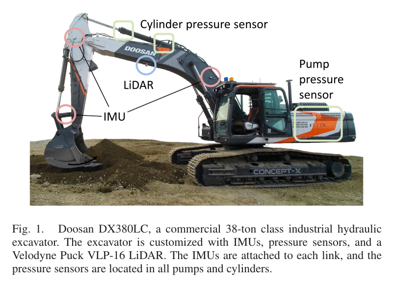
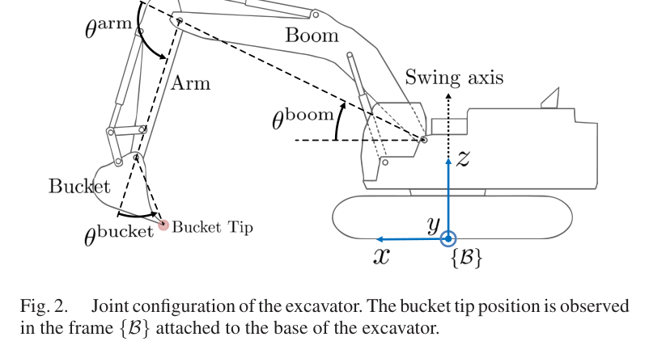
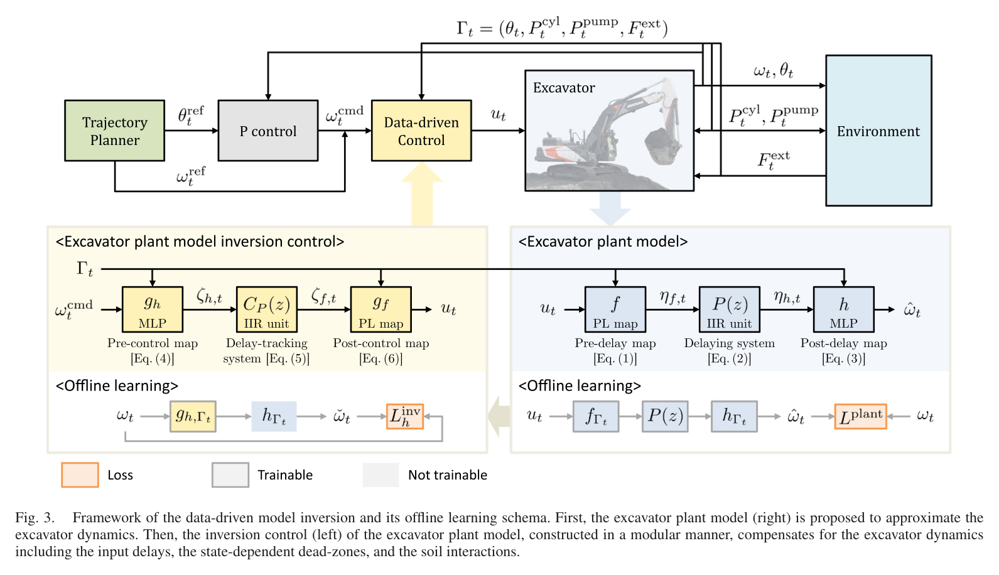
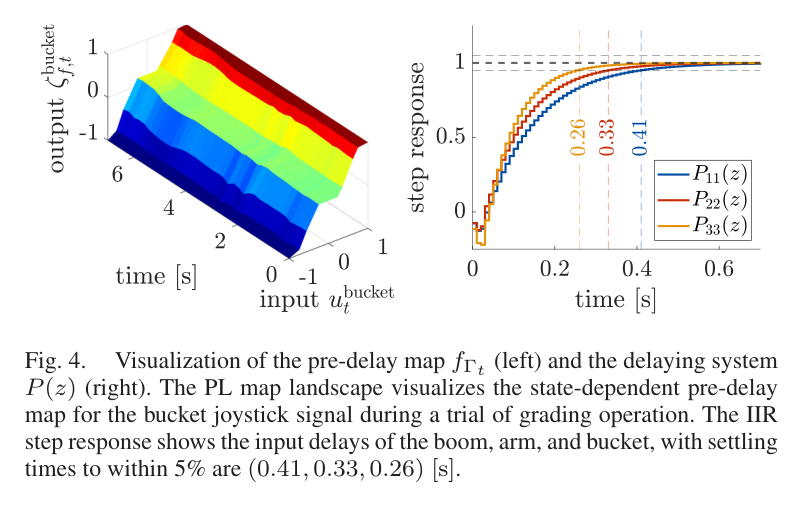
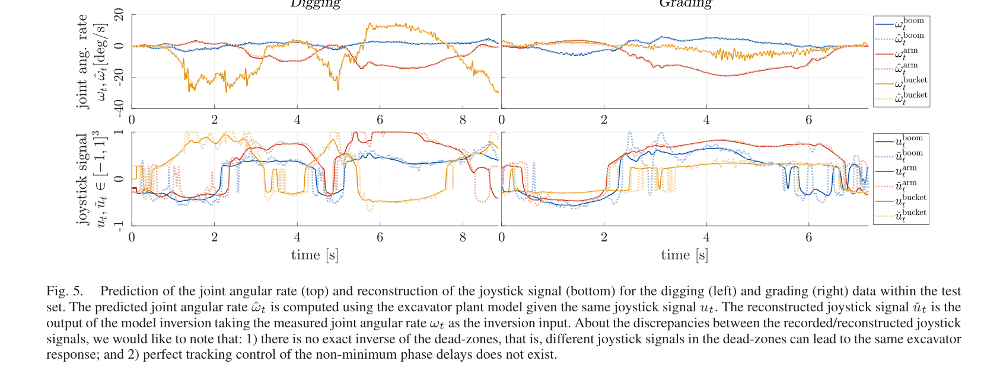
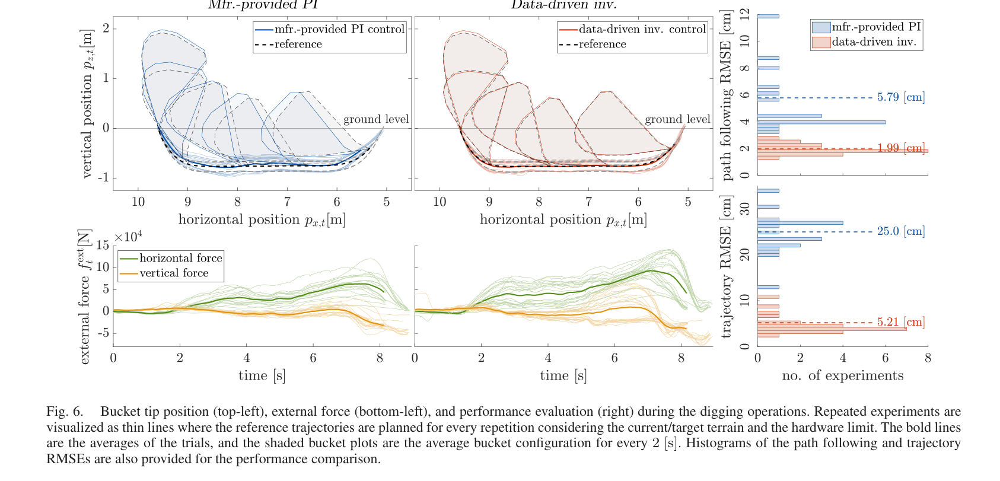
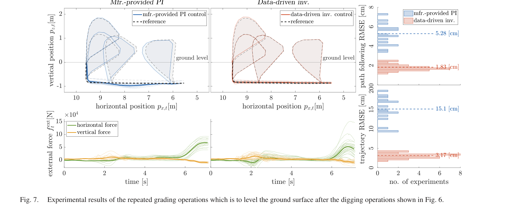

Precision Motion Control of Robotized Industrial Hydraulic Excavators via Data-Driven Model Inversion
Minhyeong Lee, Hyelim Choi, ChangU Kim, Jihyun Moon, Dongmok Kim, Dongjun Lee · IEEE Robotics and Automation Letters (RA-L)
한줄 요약 — 조인트 자세·실린더 및 펌프 압력·추정 외력을 입력으로 받는 구간선형 정적 맵, IIR 지연 모델과 MLP 속도 모델을 각각 학습한 뒤 해석적 의사역·역필터·신경망 역모델을 직렬로 구성하여, 실제 38톤 굴착기의 굴착과 grading에서 비슷한 작업 속도를 유지하면서 버킷 팁 경로 RMSE를 각각 1.99 cm와 1.83 cm로 낮췄다.
1.연구 배경 및 동기
대형 유압 굴착기의 지연·dead zone·하중 변화를 역모델로 보상하는 정밀 제어
대형 유압 굴착기의 조이스틱 명령과 실제 링크 운동 사이에는 밸브 dead zone, 유량 포화, 방향별 비대칭, 유체 압축성에 따른 지연과 토양 접촉 하중이 존재한다. 제조사 제어기는 안정성과 범용성을 우선한 PI 구조를 사용하기 때문에 빠른 굴착과 정밀한 grading에서 동일한 추종 성능을 내기 어렵다. 모든 현상을 하나의 거대한 신경망으로 학습하면 많은 파라미터와 학습시간이 필요하고, 어떤 요소가 지연이나 비선형을 보상하는지 해석하기도 어렵다.
논문은 유압 plant를 물리적 역할이 구분되는 세 모듈로 분해하고, 각 모듈을 역순으로 뒤집어 feedforward 제어기를 만드는 physics-inspired data-driven 접근을 제안한다. 구간선형 맵은 조이스틱 dead zone과 방향 비대칭을, 대각 IIR 필터는 조인트별 유압 지연을, MLP는 자세·압력·외력에 따른 각속도를 학습한다. 수집된 260만 시점의 실제 작업 데이터로 오프라인 학습하고, 역모델 출력에 단순한 비례 피드백을 더해 모델 오차와 외란을 억제한다.

원문 Figure 1 · PDF p.2 — Fig. 1. Doosan DX380LC, a commercial 38-ton class industrial hydraulic excavator. The excavator is customized with IMUs, pressure sensors, and a Velodyne Puck VLP-16 LiDAR. The IMUs are attached to each link, and the pressure sensors are located in all pumps and cylinders.

원문 Figure 2 · PDF p.2 — Fig. 2. Joint configuration of the excavator. The bucket tip position is observed in the frame {B} attached to the base of the excavator.
선행 연구의 한계
단일 end-to-end 신경망은 정적 비선형과 시간 지연을 한꺼번에 학습해야 해 데이터와 파라미터 요구량이 크고 역변환이 불투명하다.
기존 소형 굴착기 강화학습은 약 10~20 cm/s의 낮은 속도 조건이 많아 38톤급 실제 작업의 빠른 동작과 직접 대응하지 않는다.
온라인 RNN 기반 모델링 사례는 실제 장비에서 1 m를 넘는 경로 오차를 보고해 정밀 grading에 부족했다.
제조사 PI 제어는 작업 하중과 조인트별 지연 차이를 충분히 선행 보상하지 못해 모서리와 방향 전환에서 큰 궤적 오차가 남는다.
이 연구의 기여
정적 구간선형 맵, 조인트별 IIR 지연, 상태 의존 MLP로 구성된 해석 가능한 모듈형 plant 모델을 제시했다.
각 모듈의 의사역, 인과적 역필터와 학습 역모델을 직렬 연결해 원하는 각속도를 조이스틱 명령으로 변환했다.
260만 시점, 7.2시간의 38톤 굴착기 실운전 데이터를 구축하고 굴착·grading에서 실제 폐루프 성능을 검증했다.
9,160개 파라미터와 약 2시간 학습으로 기존 비교 신경망보다 작은 모델을 구성하고, 굴착과 grading 모두 2 cm 미만 경로 RMSE를 달성했다.
2.방법론 및 시스템 구성
plant 모델의 첫 모듈은 조이스틱 명령을 유효 밸브 입력으로 바꾸는 조인트별 8구간 piecewise-linear 맵이다. 두 번째 모듈은 boom, arm, bucket 축에 독립적인 3차 대각 IIR 전달함수를 적용해 유압 응답 지연과 완만한 상승을 표현한다. 세 번째 모듈은 세 조인트 각도, 여섯 실린더 챔버 압력, 두 펌프 압력과 두 성분의 추정 외력을 합친 13차원 작업 상태와 지연된 입력으로 각속도를 예측하는 MLP다. 이 분해는 메모리 효과를 IIR에 맡기고 MLP가 상태·부하 의존 성분에 집중하도록 한다.
제어기에서는 순서를 뒤집는다. 먼저 목표 각속도와 현재 상태를 입력하는 역 MLP가 지연 모듈의 필요한 출력을 계산한다. 이어 안정한 인과적 보상필터가 IIR의 지연을 부분적으로 상쇄하고, 마지막으로 piecewise-linear 맵의 해석적 의사역이 조이스틱 명령을 생성한다. 완전한 역변환이 어려운 dead zone과 비최소위상 지연 때문에 feedforward만으로 정확도를 보장하지 않고, 조인트 각도 오차에 K=1.5I 비례 피드백을 추가한다. 논문은 각속도 추종 오차가 유계이면 각도 오차도 궁극적으로 유계가 됨을 정리로 제시한다.
처리 파이프라인
1
실운전 데이터 수집
DX380LC가 여러 깊이와 속도로 굴착·grading을 수행하도록 하고, 0.25~0.5 Hz와 진폭 0.3~0.5의 sinusoidal 조이스틱 명령도 추가한다. 100 Hz CAN·센서 데이터를 동기화해 조인트 자세, 챔버·펌프 압력, 외력 추정치, 조이스틱과 각속도를 기록한다.
2
모듈형 plant 식별
조인트별 8-segment 구간선형 맵, 대각 3차 IIR 필터, hidden size 256의 ReLU MLP를 순차 학습한다. IIR이 시간 지연을 명시적으로 담당하므로 MLP가 긴 시계열 기억을 자체적으로 학습할 필요가 줄어든다.
3
역모델 구성
상태와 목표 각속도에서 필요한 내부 입력을 예측하는 tanh MLP, 극점 0.82가 중복된 인과 보상필터, 구간선형 맵의 분석적 의사역을 연결한다. distal learning으로 역 MLP를 학습하고 plant 예측을 통과한 출력이 목표 속도와 맞도록 한다.
4
비례 피드백 결합
역모델의 조이스틱 feedforward에 조인트 각도 오차 기반 P 보정을 추가해 학습 오차와 외란 누적을 줄인다. 실험에서는 세 축에 동일한 K=1.5를 적용한다.
5
경로 추종 실기 평가
전문가 작업 패턴을 경로 길이에 맞게 스케일링해 굴착 및 grading 기준 궤적을 만들고, 제안 제어기와 제조사 PI 제어기를 동일 장비에서 비교한다. 시작 후 1초의 과도 구간은 RMSE 계산에서 제외한다.
원문 수식과 의미
모듈형 plant
상태 의존 piecewise-linear 정적 맵 f, 조인트별 IIR 동역학 P(z), 상태 의존 속도 MLP h를 직렬 연결한 식 (1)~(3)의 핵심 관계다. 상태 Γ에는 자세, 압력과 외력 정보가 포함된다.
데이터 기반 역모델
목표 각속도를 역 MLP g_h, 인과적 지연 보상필터 C_P, 정적 맵 의사역 g_f에 통과시켜 조이스틱 명령으로 변환하는 식 (4)~(6)의 구조다.
비례 피드백이 포함된 명령
기준 각속도에 조인트 각도 오차의 비례항을 더하는 식 (8)이다. 역모델의 feedforward 오차와 외부 하중 변화를 폐루프로 보정한다.

원문 Figure 3 · PDF p.3 — Fig. 3. Framework of the data-driven model inversion and its offline learning schema. First, the excavator plant model (right) is proposed to approximate the excavator dynamics. Then, the inversion control (left) of the excavator plant model, constructed in a modular manner, compensates for the excavator dynamics including the input delays, the state-dependent dead-zones, and the soil interactions.
3.핵심 기술
정적 비선형·지연·상태 의존성을 분리한 plant 모델
하나의 네트워크로 유압계를 근사하는 대신 각 현상을 적합한 모델에 배분한 것이 핵심이다. 밸브 dead zone과 양·음 방향의 다른 이득은 구간선형 함수로 직접 나타내고, 링크별 상승시간은 IIR 필터로 표현한다. 원문에서 식별된 settling time은 boom 0.41초, arm 0.33초, bucket 0.26초로 서로 달라 단일 지연값으로 처리하기 어렵다.
상태 의존 MLP는 링크 각도뿐 아니라 여섯 챔버와 두 펌프의 압력, 운동량 관측기로 추정한 두 축 외력을 받는다. 따라서 동일한 조이스틱 명령이라도 자세와 토양 하중에 따라 달라지는 속도를 표현할 수 있다. IIR을 제거한 모델은 폐루프에서 치명적인 진동을 보였다는 관찰도, 유압 지연을 독립 모듈로 식별하는 필요성을 뒷받침한다.
상태 벡터 Γ는 3개 조인트 각도, 6개 실린더 챔버 압력, 2개 펌프 압력과 2개 외력 성분의 13차원이다.
정적 맵은 조인트별 8개 선형 구간과 hidden size 64의 보조 네트워크로 구성된다.
동역학 모듈은 세 축이 대각으로 분리된 3차 IIR 필터다.
속도 예측 MLP의 hidden size는 256이고 ReLU 활성화를 사용한다.
test 각속도 RMSE는 boom 0.51, arm 0.66, bucket 1.16 deg/s였다.
학습 모델을 직접 뒤집는 경량 feedforward 제어
역모델은 plant의 모듈성을 그대로 이용한다. piecewise-linear dead zone은 구간별 기울기로 해석적 의사역을 만들 수 있고, 지연은 안정한 인과 필터로 제한적으로 보상하며, 남은 상태 의존 변환만 작은 MLP가 학습한다. 역 MLP는 hidden size 256의 tanh 구조이고 학습시간은 5분 미만으로 보고됐다.
이 방식은 57,476개 파라미터와 약 10시간 학습을 사용한 비교 단일 신경망에 비해 9,160개 파라미터와 약 2시간 plant 학습으로 구성된다. 더 많은 260만 시점을 사용하면서도 모듈 구조 덕분에 학습 부담을 제한했고, 최종 P 피드백은 exact inversion이 불가능한 dead zone과 지연의 잔차를 안정적으로 줄인다.
보상필터 C_P의 극점은 0.82이며 중복도 2로 설정됐다.
정적 맵 역변환은 학습망이 아니라 구간별 분석적 pseudo-inverse로 계산한다.
역 MLP는 distal learning으로 학습해 plant 모델을 통과한 속도가 목표값과 일치하도록 한다.
폐루프 이득은 K=1.5I3으로 굴착과 grading에 동일하게 적용됐다.

원문 Figure 4 · PDF p.6 — Fig. 4. Visualization of the pre-delay map fΓt (left) and the delaying system P(z) (right). The PL map landscape visualizes the state-dependent pre-delay map for the bucket joystick signal during a trial of grading operation. The IIR step response shows the input delays of the boom, arm, and bucket, with settling times to within 5% are (0.41, 0.33, 0.26) [s].

원문 Figure 5 · PDF p.7 — Fig. 5. Prediction of the joint angular rate (top) and reconstruction of the joystick signal (bottom) for the digging (left) and grading (right) data within the test set. The predicted joint angular rate ˆωt is computed using the excavator plant model given the same joystick signal ut. The reconstructed joystick signal ˇut is the output of the model inversion taking the measured joint angular rate ωt as the inversion input. About the discrepancies between the recorded/reconstructed joystick signals, we would like to note that: 1) there is no exact inverse of the dead-zones, that is, different joystick signals in the dead-zones can lead to the same excavator response; and 2) perfect tracking control of the non-minimum phase delays does not exist.
4.실험 결과
실험 환경·장비·데이터
38톤급 Doosan DX380LC에 boom·arm·bucket IMU, 6개 실린더 챔버 압력 센서, 2개 펌프 압력, Velodyne Puck VLP-16 LiDAR를 장착했다.
외력은 운동량 기반 관측기로 추정하고 지형은 LiDAR로 관측했으며 CAN을 포함한 제어·센서 데이터는 100 Hz로 수집했다.
굴착과 grading을 여러 깊이와 속도로 수행하고 0.25~0.5 Hz, 진폭 0.3~0.5의 sinusoidal 조이스틱 동작을 더해 260만 시점, 7.2시간 데이터를 확보했다.
데이터는 80:15:5로 train, validation, test 분할했다. 약 120만 시점, 3.3시간 이상에서 명목 성능에 도달했다고 보고했다.
학습 컴퓨터는 AMD Ryzen 5 3600X 3.8 GHz, RAM 16 GB, GTX 1660 Ti였으며 plant 학습에는 Adam을 사용했다.
실험 프로토콜
전문가 굴착·grading 패턴을 작업 길이에 맞게 스케일링해 조인트 기준 궤적을 생성했다.
제안 역모델+P 제어기와 장비 제조사의 PI 제어기를 동일한 실제 굴착기에서 각각 실행했다.
굴착과 grading에서 버킷 팁의 공간 경로 오차, 시간 정렬 궤적 오차, RMS 속도와 추정 외력을 기록했다.
초기 1초의 과도응답을 제외한 구간에서 RMSE를 계산했다.
plant 예측과 역모델 재구성 성능도 별도의 test 데이터로 확인했다.
비교 기준
실제 장비에 탑재된 제조사 PI 제어기
논문에서 언급한 단일 신경망 plant 모델의 파라미터 수·데이터·학습시간 비교
IIR 모듈 제거 시 폐루프 진동 관찰을 통한 구조 ablation
평가 지표
버킷 팁 path RMSE
시간 정렬 trajectory RMSE
RMS 버킷 팁 속도
RMS 추정 외력
조인트별 각속도 예측 RMSE
모델 파라미터 수와 학습시간

원문 Figure 6 · PDF p.7 — Fig. 6. Bucket tip position (top-left), external force (bottom-left), and performance evaluation (right) during the digging operations. Repeated experiments are visualized as thin lines where the reference trajectories are planned for every repetition considering the current/target terrain and the hardware limit. The bold lines are the averages of the trials, and the shaded bucket plots are the average bucket configuration for every 2 [s]. Histograms of the path following and trajectory RMSEs are also provided for the performance comparison.
핵심 결과 해석
굴착 작업에서 제조사 PI 제어기의 버킷 팁 path RMSE는 5.79 cm였으나 제안법은 1.99 cm를 기록했다. 시간까지 정렬한 trajectory RMSE는 25.0 cm에서 5.21 cm로 감소했다. 두 제어기의 RMS 작업 속도는 각각 66.2 cm/s와 66.3 cm/s로 거의 같아, 오차 감소가 단순한 저속 운전에서 나온 결과는 아니다. 제안법의 RMS 외력은 6.41×10^4 N으로 PI의 4.31×10^4 N보다 컸으며, 더 큰 접촉 하중에서도 궤적을 유지한 실험으로 해석할 수 있다.
grading에서는 PI의 path RMSE 5.28 cm와 trajectory RMSE 15.1 cm가 제안법에서 각각 1.83 cm와 3.17 cm로 줄었다. RMS 속도는 87.2 cm/s와 87.3 cm/s로 같았고, RMS 외력은 제안법이 2.23×10^4 N, PI가 2.69×10^4 N이었다. 따라서 두 작업에서 모두 비슷한 생산 속도를 유지하면서 약 2 cm 이하의 공간 경로 정확도를 달성했다.
plant test 데이터에서 각속도 예측 RMSE는 boom 0.51 deg/s, arm 0.66 deg/s, bucket 1.16 deg/s였다. 명시적 IIR 지연 모듈 없이 제어했을 때 치명적인 진동이 발생한 반면, 제안 모듈 구조는 실제 폐루프 동작을 안정적으로 유지했다. 다만 실험은 시상면 세 축에 한정되고 제조사 PI 외의 최신 제어기와 동등한 조건의 비교는 없다.
정량 결과
평가 항목
정량 결과
조건·맥락
원문 근거
plant 모델 파라미터 수
9,160
제안 모듈형 모델; 비교 단일 신경망은 57,476
PDF p.2
plant 학습시간
약 2 h
260만 시점 데이터; 비교 단일 신경망은 약 10 h
PDF p.2
조인트 각속도 test RMSE
0.51 / 0.66 / 1.16 deg/s
boom / arm / bucket 순서
PDF p.6
굴착 path RMSE
1.99 cm
제안법; 제조사 PI는 5.79 cm
PDF p.7
굴착 trajectory RMSE
5.21 cm
제안법; 제조사 PI는 25.0 cm
PDF p.7
굴착 RMS 속도
66.3 cm/s
제안법; 제조사 PI는 66.2 cm/s
PDF p.7
grading path RMSE
1.83 cm
제안법; 제조사 PI는 5.28 cm
PDF p.7
grading trajectory RMSE
3.17 cm
제안법; 제조사 PI는 15.1 cm
PDF p.7
grading RMS 속도
87.3 cm/s
제안법; 제조사 PI는 87.2 cm/s
PDF p.7
실패 사례와 경계조건
IIR 지연 모듈을 제거한 제어 실험에서는 치명적인 진동이 발생해 시간 지연의 명시적 모델링이 필수임을 보였다.
dead zone과 비최소위상 지연은 정확한 역변환이 불가능하므로 feedforward만 사용할 경우 잔여 오차가 누적될 수 있다.
학습 분포와 다른 장비, 토질, 밸브 상태나 큰 압력 변화에서는 상태 의존 MLP와 정적 맵의 일반화가 보장되지 않는다.
swing 축과 3차원 작업이 제외되어 차체 회전과 복합 작업에서는 동일한 정밀도를 확인하지 못했다.

원문 Figure 7 · PDF p.8 — Fig. 7. Experimental results of the repeated grading operations which is to level the ground surface after the digging operations shown in Fig. 6.
5.한계 및 향후 연구
현재 한계
boom·arm·bucket의 시상면 운동만 다루며 cabin swing과 3차원 작업은 모델과 실험에서 제외했다.
260만 시점의 데이터가 특정 DX380LC 한 대에서 수집돼 장비 노후도와 다른 유압 회로에 대한 전이성이 검증되지 않았다.
지연을 선형 시불변 IIR로 나타내므로 온도, 유량 공유와 하중에 따라 지연 자체가 변하는 현상은 제한적으로만 표현한다.
실험 작업이 굴착과 grading에 집중돼 dumping, 적재 운반, 경사면과 복합 접촉으로의 일반화가 확인되지 않았다.
비교 baseline은 제조사 PI가 중심이며 다른 모델예측제어, 적응제어, 강화학습 제어와의 엄밀한 비교가 없다.
향후 연구
상태 의존 지연 모델을 도입해 온도·압력·동시 구동에 따른 유압 응답 변화를 표현한다.
swing 축과 3차원 버킷 자세를 포함하는 전체 장비 역모델로 확장한다.
전문가 경로 생성에 의존하지 않고 작업 목표에서 기준 궤적을 만드는 자율 계획기와 통합한다.
장비별 데이터 재수집 부담을 줄이기 위해 online adaptation이나 over-the-air 모델 갱신을 적용한다.
다른 정밀 제어기와 동일 작업·속도·토질에서 반복 비교하고 장기 운전에 따른 모델 drift를 평가한다.
6.한마디로 정리
핵심 방법은?
유압계의 dead zone, 지연과 상태·하중 의존성을 구간선형 맵, IIR, MLP로 분리 학습하고 역순 모듈과 P 피드백으로 조이스틱 명령을 생성했다.
핵심 결과는?
실제 38톤 굴착기에서 비슷한 RMS 속도를 유지하면서 굴착 1.99 cm, grading 1.83 cm의 path RMSE를 달성했다.
한계는?
특정 장비의 오프라인 데이터와 2차원 세 축 작업에 의존하며, 상태 의존 지연·장비 간 전이·다른 최신 제어법과의 비교가 남아 있다.
#제어·MPC#학습·RL·IL·VLA#시스템통합·현장실증#모듈식 신경망 플랜트 모델#데이터 기반 역모델#dead-zone 보상#지연 모델링#P 피드백
나의 의견 / 우리 연구와의 연관성
필드로봇 시스템에서는 상위 작업계획이 정교해도 하위 유압 구동의 dead zone과 지연을 보상하지 못하면 현장 품질이 나오지 않는다. 이 논문은 센서와 압력·외력 데이터를 이용해 장비 고유의 actuator inverse를 학습하는 실용적 경로를 보여준다. 대시보드에는 조인트별 settling time, 역모델 잔차, 압력·외력 분포와 경로 RMSE를 함께 표시해 모델 drift를 감시할 수 있다.
맥락지능 기반 작업 로봇에서는 이 제어기를 숙련자 궤적 복제에만 쓰기보다, 상위 계획기나 학습 정책이 출력한 속도 목표를 실제 유압 명령으로 변환하는 embodiment 계층으로 배치할 수 있다. 다만 장비 상태와 작업 맥락이 학습 분포를 벗어날 때를 탐지하고 안전한 제조사 제어기로 전환하는 보호 논리가 필요하다.
대규모 end-to-end 모델보다 물리 현상별 작은 모듈을 조합하는 현장 친화적 학습 제어 사례다.
압력과 추정 외력을 상태 입력으로 사용해 토양 접촉 맥락을 저수준 제어에 반영한다.
경로 RMSE뿐 아니라 모델 잔차와 IIR settling time을 장비 건강·성능 지표로 활용할 수 있다.
장비별 재학습과 분포 이탈 감지가 실제 배치의 핵심 운영 과제로 남는다.
7.전체 그림·표
본문 핵심 위치에 배치하지 않은 원문 Figure와 Table을 원문 페이지 순서로 수록한다.